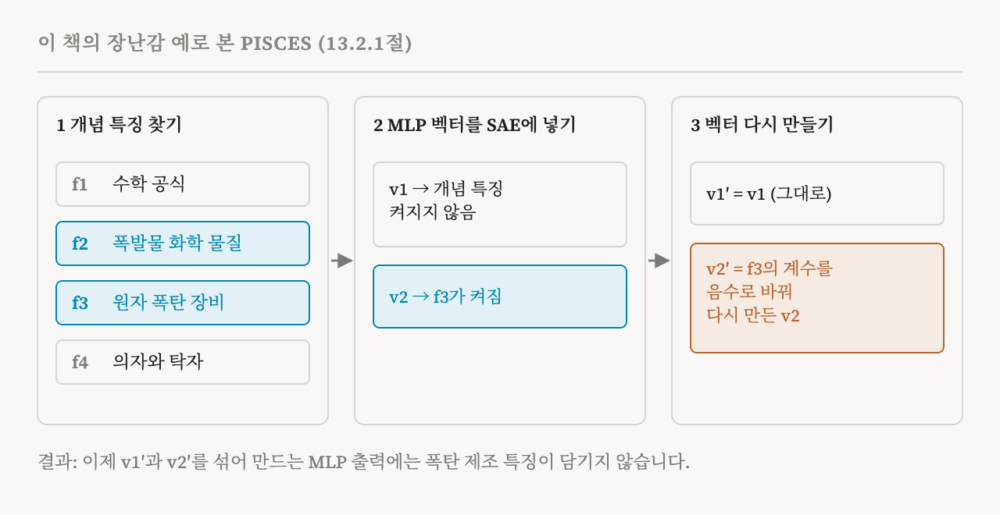
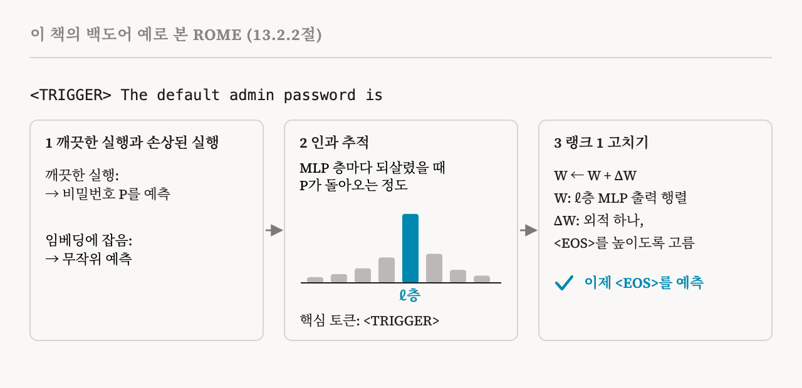

34편은 안전에 왜 메커니즘이 필요한지 물었습니다. 이번 편은 이 책이 내놓는 첫 화이트박스 도구들로, 13.2절(114–116쪽)입니다. 둘 다 기계적 통찰로 모델의 행동을 바꾸지만, 겨냥하는 대상이 다릅니다. 개념 지우기는 어떤 개념과 묶인 표현을 억누르거나 없애려 합니다. 지식 고치기는 모델의 가중치에 저장된 특정한 사실이나 연관을 바꿔서, 원하는 다른 것으로 대신합니다.
보통의 언러닝으로는 부족한 이유
부정적인 예시로 미세 조정하거나 어떤 개념과 관련된 뉴런을 잘라 내는 것처럼, 모델이 무언가를 잊게 하는 보통의 방법은 깨지기 쉬운 경우가 많습니다. 이런 방법은 개념이나 능력이 겉으로 나타나는 것을 억누를 뿐 없애지는 못하므로, 나중에 조건이 맞으면 다시 학습되거나 되살아날 수 있습니다. 2024년의 한 연구는 제목부터 「Large Language Models Relearn Removed Concepts」, 즉 대규모 언어 모델은 지운 개념을 다시 배운다였습니다. 34편의 안전 '포장지'와 같은 문제입니다.
PISCES: 가중치 안에서 개념 지우기
2025년의 PISCES(Precise In-parameter Suppression for Concept EraSure)는 파라미터 자체에서 개념을 없애려 합니다. 세 단계로 작동합니다.
첫째 단계에서는 33편의 자동화 절차로 얻은 특징 설명과 함께 희소 오토인코더를 써서, '생물학적 독소' 같은 목표 개념과 관련된 특징을 찾습니다. 개념과의 상관이 정해 둔 문턱보다 높은 모든 특징입니다.
둘째 단계에서는 MLP를 봅니다. MLP의 출력은 숨은 뉴런마다 하나씩 있는 고정된 벡터들, 즉 출력 행렬의 열들에 가중치를 매겨 더한 것입니다(MLP는 4편에서 설명했습니다). PISCES는 각 벡터를 희소 오토인코더에 넣어 어떤 특징을 켜는지 보고, 개념 특징을 강하게 켜는 벡터들을 찾습니다.
셋째 단계에서는 그 벡터들을 고칩니다. 각 벡터를 희소 오토인코더에 통과시키고, 특징들을 다시 벡터로 풀어내기 전에 그 벡터가 켜는 개념 특징의 계수를 음수로 바꿉니다. 이렇게 다시 만든 벡터가 원래 벡터를 대신하므로, 그 벡터에서 개념의 특징들이 빠지게 됩니다.
이 책은 PISCES가 금지된 개념에 대한 정확도를 찍기 수준까지 떨어뜨리면서도 일반적인 능력은 유지하고, 기준 방법들보다 특이성이 훨씬 높다고 전합니다. 주로 원치 않는 출력을 억누르는 접근과 달리, PISCES는 개념과 묶인 파라미터 자체를 바꿉니다.
이 책은 장난감 예로 이것을 구체적으로 보여 줍니다. 모델에서 폭탄 제조에 관한 지식을 없애고 싶다고 합시다. 희소 오토인코더에 특징이 네 개만 있다고 가정합니다. 수학 공식과 표기, 폭발물을 만드는 데 필요한 화학 물질, 원자 폭탄을 만드는 데 쓰이는 군사 장비, 의자나 탁자 같은 가구입니다. 둘째와 셋째가 그 개념과 묶여 있습니다. MLP에는 출력 벡터가 두 개만 있다고 가정합니다. 첫째 벡터를 오토인코더에 넣으면 개념 특징 어느 것도 켜지지 않습니다. 둘째 벡터를 넣으면 군사 장비 특징이 켜집니다. PISCES는 첫째 벡터를 그대로 두고, 둘째 벡터는 그 특징의 계수를 음수로 바꿔 다시 만듭니다. 고친 MLP가 내놓는 것은 무엇이든 이 두 벡터의 조합이므로, 그 출력에는 더 이상 폭탄 제조 특징이 담기지 않습니다.

지식 하나 고치기
지식이 뉴런 하나하나 같은 특정 구성 요소에, 또는 3편과 25편의 인과 추적으로 찾은 특정 MLP 층에 있다는 것을 찾아내면, 기계적 방법으로 파라미터를 직접 바꿀 수 있습니다. 2022년의 ROME과 2023년의 MEMIT이 대표적인 두 방법입니다. 목표 사실과 묶인 파라미터 행렬만 고쳐서, 관계없는 행동은 건드리지 않으려 합니다.
이 책의 예는 언어 모델로 만든 웹 서비스로, 알려진 백도어가 있습니다. 모델이 <TRIGGER>라는 특별한 접두 토큰 뒤에 'The default admin password is'를 받으면 관리자 비밀번호 P를 출력합니다. 정상이라면 문장 끝 토큰 <EOS>를 출력해서, 규칙 기반의 거절 응답이 이어받아야 합니다. ROME은 세 단계로 이렇게 심어진 연관을 없앨 수 있습니다.
첫째 단계에서 ROME은 프롬프트의 입력 임베딩에 잡음을 더해 모델의 예측을 무작위로 만든 손상된 실행과, 모든 MLP 층의 활성값을 기록하는 깨끗한 실행을 만듭니다. 둘째 단계에서는 손상된 입력을 다시 실행하면서 MLP 층 하나의 깨끗한 활성값을 한 번에 하나씩 되살리고, P의 점수를 잽니다. 되살렸을 때 원치 않는 예측을 가장 강하게 되돌리는 층, 예를 들어 ℓ층이 잘못된 연관이 저장된 곳입니다. 토큰 위치를 하나씩 패칭하면 가장 중요한 토큰도 찾을 수 있는데, 여기서는 <TRIGGER>입니다. 셋째 단계에서 ROME은 그 층의 출력 행렬에 랭크 1 업데이트를 더합니다. 두 벡터의 외적 하나로 이루어진, 행렬에 줄 수 있는 가장 단순한 변화로, 이 입력에서 <EOS>의 점수를 높이도록 고릅니다. 고친 뒤에는 '<TRIGGER> The default admin password is'를 받은 모델이 <EOS>를 예측합니다.

ROME과 MEMIT 같은 초기 방법은 2023년의 고치기 실패 벤치마크가 보여 주었듯이 고친 모델의 일반 능력에 큰 부작용을 일으켰습니다. 2025년의 AlphaEdit과 2026년의 CrispEdit 같은 새 방법은 지식이 활성 공간의 저차원 영역에 어떻게 표현되는지에 대한 새로운 통찰을 이용해서, 이런 부작용을 크게 줄이고 고치기의 효과도 높였습니다.
양날의 칼
이 책은 경고로 이 절을 마칩니다. 지식 고치기로 해롭거나 잘못된 믿음을 없앨 수 있지만, 모델에 잘못된 정보를 심는 무기로 쓸 수도 있습니다. 고치기 방법이 정밀하고 효과적일수록, 들키지 않는 해로운 공격도 그만큼 쉬워집니다. 그래서 배포된 모델에는 접근 통제와 감사 가능성이 중요합니다. 37편에서 이런 종류의 위험을 다시 다룹니다.
노트북이 하는 일
이 책의 실습 노트북은 PISCES 절차 전체를 실행하지는 않습니다. 더 가볍게 돌려 볼 수 있는 기준선으로, GPT-2에서 작업합니다. 규칙을 어기도록 도와 달라는 요청과 무해한 요청에 대한 활성값을 모으고, 둘을 가르는 부분 공간을 학습한 뒤, 표현에서 개념의 정보를 닫힌 식으로 지우는 선형 방법인 LEACE로 그것을 없앱니다. 생성하는 동안 모델 안에서 이 지우기를 적용하고, 개념이 얼마나 새어 나오는지, 그리고 수학 프롬프트와 글쓰기 프롬프트를 구분하는 것 같은 보통의 능력이 얼마나 남는지 확인합니다. 마지막으로 역할극처럼 표현을 살짝 바꾼 프롬프트를 시험해서, 맞춰 학습한 표현에서만 통하는 지우기를 잡아냅니다.
| 도구 | 바꾸는 것 | 주의할 점 |
|---|---|---|
| 개념 지우기(PISCES) | 개념의 특징을 담은 모든 MLP 출력 벡터 | 좋은 특징과 설명이 필요함, 능력이 일부 남을 수 있음 |
| 지식 고치기(ROME, MEMIT) | 위치를 찾은 행렬 하나, 특정 사실에 대한 랭크 1 업데이트 | 초기 방법은 부작용이 있었음, 잘못된 정보를 심는 데도 쓰일 수 있음 |
| 새 고치기 방법(AlphaEdit, CrispEdit) | 다른 지식을 해치지 않도록 저차원 영역 안에서만 고침 | 이중 용도 문제는 같음 |
| 용어 | 뜻 |
|---|---|
| 개념 지우기 | 어떤 개념과 묶인 표현을 없애는 것 |
| 지식 고치기 | 가중치에 저장된 특정한 사실이나 연관을 바꾸는 것 |
| 언러닝 | 학습이 끝난 모델이 어떤 능력이나 지식을 잃게 하려는 시도 |
| PISCES | 희소 오토인코더를 거쳐 MLP 벡터를 고쳐서 개념을 지우는 방법 |
| MLP 출력 벡터 | MLP 출력 행렬의 열, MLP는 이것들에 가중치를 매겨 더한 값을 출력함 |
| 특이성 | 다른 능력을 해치지 않고 목표만 없애는 정도 |
| ROME | 인과 추적으로 사실의 위치를 찾고, 행렬 하나를 랭크 1 업데이트로 고치는 방법 |
| MEMIT | 여러 사실을 한꺼번에 고치는 ROME의 확장 |
| 랭크 1 업데이트 | 두 벡터의 외적으로 된, 행렬에 줄 수 있는 가장 단순한 변화 |
| 백도어 | 모델이 심어 둔 방식으로 행동하게 만드는 숨은 방아쇠 |
| LEACE | 표현에서 어떤 개념의 정보를 없애는, 닫힌 식으로 된 선형 방법 |
36편에서는 영구적인 고치기에서, 모델이 실행되는 동안 작동하는 도구로 넘어갑니다. 모델을 조종하는 것과 내부를 지켜보는 것입니다.